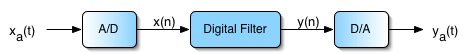

Welcome to ECE 420

Course Description: The first six weeks of the course will be structured labs based on the course text. The next 3 weeks will be on implementation and simulation of a fundamental DSP algorithm (such as adaptive filter, pitch detection, edge-aware filtering, motion tracking, pattern recognition,...) that the student chooses from a set of seminal DSP papers. The remaining 6 weeks of the course will be the development, testing, and documenting of a DSP project of the student’s choice (subject to instructor approval). -----Above Copied Directly From Old Page-----
Course Goals: Students will learn to implement and analyze real-time digital signal processing (DSP) systems. Students will both broaden and deepen their understanding of basic DSP theory and techniques and learn to relate this understanding to real-world observations and applications. They will learn industrially relevant skills such as assembly-language implementation of real-time DSP systems on a DSP microprocessor, and Android development of DSP applications on mobile devices. Other significant educational experiences include open-ended design, oral and written communication, and team projects. -----Above Copied Directly From Old Page-----
Lectures
Lectures are once a week on Monday from 2:00-2:50pm in 4070 ECE Building.
| Week of | Lecture Topic | Lab | Due (in lab) |
|---|---|---|---|
| 01/16 | TBD | TBD | TBD |
| 01/23 | TBD | TBD | TBD |
| 01/30 | TBD | TBD | TBD |
| 02/06 | TBD | TBD | TBD |
| 02/13 | TBD | TBD | TBD |
| 02/20 | TBD | TBD | TBD |
| 02/27 | TBD | TBD | TBD |
| 03/06 | TBD | TBD | TBD |
| 03/13 | TBD | TBD | TBD |
| 03/20 | Spring Break | ||
| 03/27 | TBD | TBD | TBD |
| 04/03 | TBD | TBD | TBD |
| 04/10 | TBD | TBD | TBD |
| 04/17 | TBD | TBD | TBD |
| 04/24 | TBD | TBD | TBD |
| 05/01 | TBD | TBD | TBD |
Labs
Labs are held in Room 5072 ECE Building. Section ABA meets Tuesday, 2:00-3:50 PM. Section ABC meets Wednesday, 2:00-3:50 PM. Section ABD meets Thursday, 2:00-3:50 PM. Section ABE meets Friday, 2:00-3:50 PM.
-----Following Part Copied Directly From Old Page----- Working code is due the same day as the quiz.
The lab is available at all times except University holiday weekends and ECE 420 class times.
Students are expected to be in the lab for their two-hour assigned lab period. In addition, students can access the lab at any time (subject to departmental rules for normal lab privileges) using their I-card. It is expected that students will require additional lab time to complete their assignments. ECE 420 students having difficulty with their I-card access should notify one of the teaching assistants.
Basic rules of courtesy and professional behavior are expected in the lab. Please do not remove any lab equipment, books, or manuals from the lab at any time. If you would like to listen to music as you work, please use headphones.
Manuals / Handouts
Grades
-----Following Part Copied Directly From Old Page----- Grades can be found on Compass at: Compass2g
The structured laboratory segment will count for 35% of the total grade, based on completion of, and oral examination over, the weekly laboratory assignments, including the underlying theory, details of the implementation and code, and the observed behavior of the system. Each lab is worth 7 points, usually with 4 point for prelab and written quiz, and the remaining 3 points for demo and oral quiz. We emphasize that your grade is based heavily on your understanding and demonstration of the course material, not just on submitting working code.
The assigned project lab (based on the student's chosen DSP paper) will account for 15% of the total grade.
The final project will count for 45% of the total grade, with 10% on the project proposal and the design review, 15% for demonstrations and quizzes of 3 project milestones, 10% for the final demo and oral presentations, and 10% on the final report.
The final 5% of the total course grade comes from a written quiz over the lecture material.
It is expected that each student will attend and participate in scheduled class and laboratory meetings, or will make prior alternate arrangements with the instructor. The final grade may be penalized if this does not occur.
All assignments other than the lecture quiz, final project proposal, and final project report are due during the scheduled laboratory meeting. A late penalty of 50% will be assessed for assignments less than a week late; assignments more than a week late will receive no credit. However, all graded assignments must be submitted to receive a passing grade in the course.
Project Details
Assigned Project Lab
-----Following Part Copied Directly From Old Page----- In this lab, students will explore in depth a chosen fundamental DSP algorithm using high-level languages (such as MATLAB or Python). Student have to demonstrate their understanding of the algorithm and its implementation through oral quiz in the lab. Students have to develop a testing and validation plan to demonstrate that the high-level implementation works. Methodology and results should be included in a short report.
More information may be found at Assigned Project Lab Details.
Final Project
-----Following Part Copied Directly From Old Page----- The last half of the course will be devoted to team projects of the student’s choice. The projects can be primarily software, primarily hardware, or a mixture, depending on the student's interests. Ideally the final project should build on the assigned project lab. A DSP platform other than the TMS320C5510 and Android mobile device can be used (or may be required) as appropriate for the needs of the project. Real-time, audio-rate digital signal processing of significant complexity is feasible, as is a basic digital communication system, computational imaging, and video processing. The emphasis in grading will be on successful completion of the agreed-upon project. Project ideas from the students will be welcomed.
More information may be found at Final Project Details.
Academic Integrity Policy
-----Following Part Copied Directly From Old Page----- Printed and online sources are allowed with proper citation. Please direct your question to Google or the course staff before you ask your classmates. Given the range of the material for this course, we encourage you to refer to any online source, but do not directly copy and paste.
We do not allow inter-group cooperation for the final project. If there is a sign of cooperation between groups, those groups will be treated as a big group, and the grade will be divided accordingly.
More information: Student Code.
Office Hours / Course Administrivia
- Prof. Minh Do: TBD
- TA Dario Aranguiz: TBD
- TA Trong Nguyen: TBD
- TA Dongbo Wang: TBD
If you have questions, post it on Piazza.
Instructor Contact Information
- Prof.Minh Do: minhdo@illinois.edu
- TA Dario Aranguiz: aranguizdario@gmail.com
- TA Trong Nguyen: ngoctrong29@gmail.com
- TA Dongbo Wang: dwang49@illinois.edu